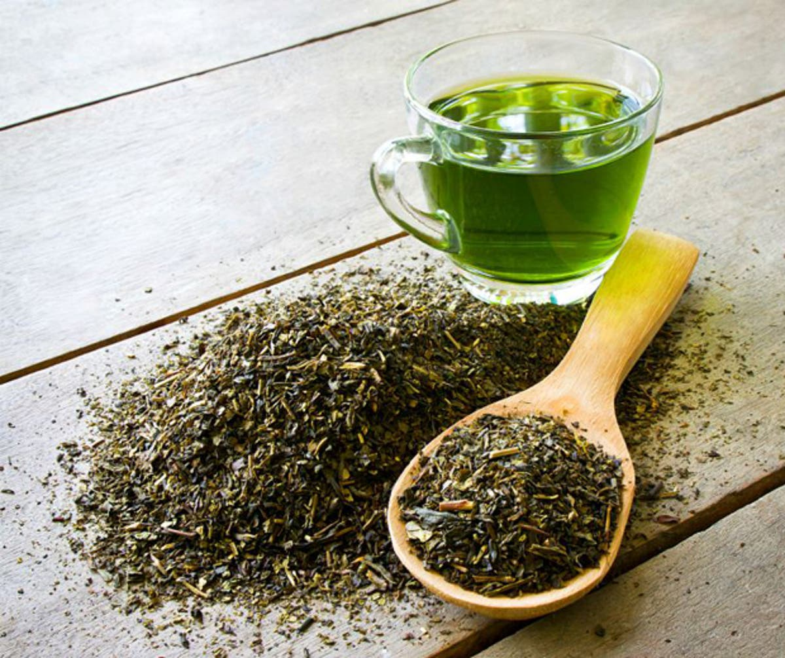

Chá de Alecrim
Aromático, revigorante e conhecido por melhorar a memória.
5,40€ / 100g

Chá Bai Hao Yinzhen
Chá branco delicado e leve, composto por brotos de chá.
5,40€ / 100g

Chá de Camomila
Calmante, com propriedades relaxantes e sabor floral suave.
5,40€ / 100g

Chá de Cidreira
Relaxante, com aroma cítrico e propriedades calmantes.
5,40€ / 100g

Chá de Curcuma
Picante e terroso, com propriedades anti-inflamatórias e antioxidantes.
5,40€ / 100g

Chá de Alcaçuz
Doce e reconfortante, com propriedades calmantes e expectorantes.
5,40€ / 100g

Chá de Dente-de-Leão
Amargo e herbáceo, usado para desintoxicação e saúde do fígado.
5,40€ / 100g

Chá de Gengibre
Picante e revigorante, ótimo para aliviar náuseas e estimular a digestão.
5,40€ / 100g

Chá de Hibisco
Vermelho vibrante, rico em vitamina C e com sabor frutado e ácido.
5,40€ / 100g

Chá de Hortelã
Refrescante, com mentol, ajuda na digestão e acalma o estômago.
5,40€ / 100g

Chá de Jasmim
Perfumado e floral, frequentemente combinado com flores de jasmim para um aroma delicado.
5,40€ / 100g

Chá Keemun
Chá preto com notas de frutas e flores, frequentemente usado em infusões de chá inglês.
5,40€ / 100g

Chá de Lavanda
Floral e relaxante, ajuda a aliviar o estresse e promover o sono.
5,40€ / 100g

Chá Longjing
Também conhecido como chá do Dragão, é um chá verde chinês, de sabor fresco, doce e levemente torrado.
5,40€ / 100g

Chá de Manjericão
Aromático, com notas de cravo e frescor herbal.
5,40€ / 100g

Chá Oolong
Parcialmente oxidado, possui uma ampla gama de sabores, variando do floral ao tostado.
5,40€ / 100g

Chá Preto
Totalmente oxidado, robusto e encorpado, com cafeína moderada.
5,40€ / 100g

Chá de Wuyi Rock
Oolong robusto e mineral, cultivado nas montanhas de Wuyi.
5,40€ / 100g

Chá Verde
Não oxidado, possui antioxidantes e é conhecido por seus benefícios à saúde.
5,40€ / 100g

Chá Huangshan Maofeng
Chá verde fresco e aromático, cultivado nas montanhas Huangshan.
5,40€ / 100g